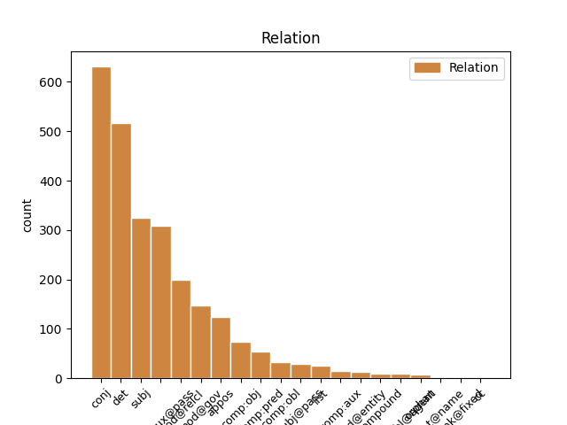
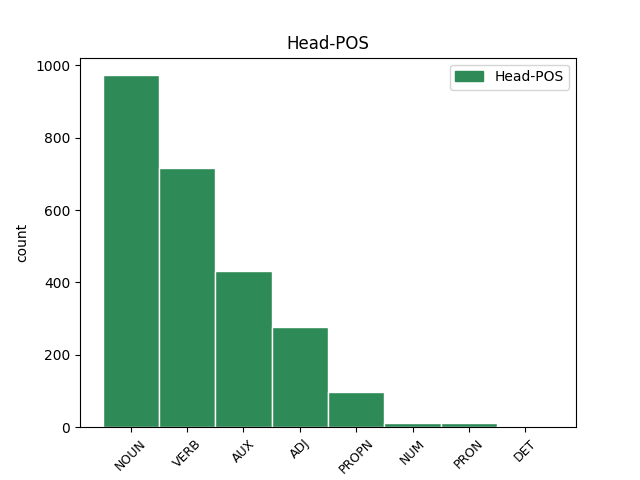
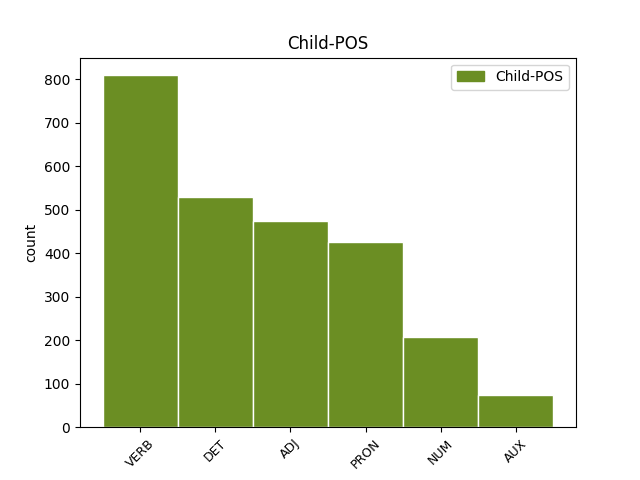

Distribution of features within this leaf



Agreement Rules sorted by frequency.
- When the dependent token is the determiner(det) of the head token, and the dependent token is DET.
1 В _ _ _ _ 0 _ _ _
2 каждом каждый DET DT Case=Loc|Gender=Masc|Number=Sing 3 det _ _
3 месяце месяц NOUN NN Animacy=Inan|Case=Loc|Gender=Masc|Number=Sing 0 _ _ _
4 тоже _ _ _ _ 0 _ _ _
5 по _ _ _ _ 0 _ _ _
6 30 _ _ _ _ 0 _ _ _
7 дней _ _ _ _ 0 _ _ _
8 . _ _ _ _ 0 _ _ _
1 Был быть AUX VBC Aspect=Imp|Gender=Masc|Mood=Ind|Number=Sing|Tense=Past|VerbForm=Fin 0 _ _ _
2 награждён наградить VERB VBNH Animacy=Anim|Aspect=Perf|Case=Nom|Gender=Masc|Number=Sing|Tense=Past|Variant=Short|VerbForm=Part|Voice=Pass 1 comp:aux@pass _ _
3 Георгиевским _ _ _ _ 0 _ _ _
4 оружием _ _ _ _ 0 _ _ _
5 ( _ _ _ _ 0 _ _ _
6 1915 _ _ _ _ 0 _ _ _
7 ) _ _ _ _ 0 _ _ _
1 На _ _ _ _ 0 _ _ _
2 основании _ _ _ _ 0 _ _ _
3 упоминания _ _ _ _ 0 _ _ _
4 Харатона _ _ _ _ 0 _ _ _
5 как _ _ _ _ 0 _ _ _
6 `` _ _ _ _ 0 _ _ _
7 первого _ _ _ _ 0 _ _ _
8 из _ _ _ _ 0 _ _ _
9 риксов _ _ _ _ 0 _ _ _
10 '' _ _ _ _ 0 _ _ _
11 делается _ _ _ _ 0 _ _ _
12 вывод _ _ _ _ 0 _ _ _
13 о _ _ _ _ 0 _ _ _
14 том _ _ _ _ 0 _ _ _
15 , _ _ _ _ 0 _ _ _
16 что _ _ _ _ 0 _ _ _
17 он он PRON PRP Case=Nom|Gender=Masc|Number=Sing|Person=3 18 subj _ _
18 был быть AUX VBC Aspect=Imp|Gender=Masc|Mood=Ind|Number=Sing|Tense=Past|VerbForm=Fin 0 _ _ _
19 правителем _ _ _ _ 0 _ _ _
20 большей _ _ _ _ 0 _ _ _
21 части _ _ _ _ 0 _ _ _
22 Гуннской _ _ _ _ 0 _ _ _
23 державы _ _ _ _ 0 _ _ _
24 , _ _ _ _ 0 _ _ _
25 возможно _ _ _ _ 0 _ _ _
26 , _ _ _ _ 0 _ _ _
27 первым _ _ _ _ 0 _ _ _
28 царём _ _ _ _ 0 _ _ _
29 , _ _ _ _ 0 _ _ _
30 объединившим _ _ _ _ 0 _ _ _
31 в _ _ _ _ 0 _ _ _
32 410-е _ _ _ _ 0 _ _ _
33 годы _ _ _ _ 0 _ _ _
34 под _ _ _ _ 0 _ _ _
35 своей _ _ _ _ 0 _ _ _
36 властью _ _ _ _ 0 _ _ _
37 все _ _ _ _ 0 _ _ _
38 племена _ _ _ _ 0 _ _ _
39 гуннов _ _ _ _ 0 _ _ _
40 , _ _ _ _ 0 _ _ _
41 проживавшие _ _ _ _ 0 _ _ _
42 к _ _ _ _ 0 _ _ _
43 северу _ _ _ _ 0 _ _ _
44 от _ _ _ _ 0 _ _ _
45 Дуная _ _ _ _ 0 _ _ _
46 . _ _ _ _ 0 _ _ _
1 В _ _ _ _ 0 _ _ _
2 те _ _ _ _ 0 _ _ _
3 годы _ _ _ _ 0 _ _ _
4 в _ _ _ _ 0 _ _ _
5 селе _ _ _ _ 0 _ _ _
6 был быть VERB VBC Aspect=Imp|Gender=Masc|Mood=Ind|Number=Sing|Tense=Past|VerbForm=Fin|Voice=Act 0 _ _ _
7 птичник _ _ _ _ 0 _ _ _
8 и _ _ _ _ 0 _ _ _
9 разбит разбить VERB VBNH Animacy=Inan|Aspect=Perf|Case=Nom|Gender=Masc|Number=Sing|Tense=Past|Variant=Short|VerbForm=Part|Voice=Pass 6 conj _ _
10 колхозный _ _ _ _ 0 _ _ _
11 сад _ _ _ _ 0 _ _ _
12 . _ _ _ _ 0 _ _ _
1 172-я _ _ _ _ 0 _ _ _
2 стрелковая _ _ _ _ 0 _ _ _
3 дивизия _ _ _ _ 0 _ _ _
4 -- _ _ _ _ 0 _ _ _
5 воинское _ _ _ _ 0 _ _ _
6 соединение _ _ _ _ 0 _ _ _
7 СССР _ _ _ _ 0 _ _ _
8 в _ _ _ _ 0 _ _ _
9 годы _ _ _ _ 0 _ _ _
10 советско-финской советско-финский ADJ JJL Case=Gen|Degree=Pos|Gender=Fem|Number=Sing 0 _ _ _
11 и _ _ _ _ 0 _ _ _
12 Великой _ _ _ _ 0 _ _ _
13 Отечественной отечественный ADJ JJL Case=Gen|Degree=Pos|Gender=Fem|Number=Sing 10 conj _ _
14 войн _ _ _ _ 0 _ _ _
15 . _ _ _ _ 0 _ _ _
1 Через _ _ _ _ 0 _ _ _
2 две два NUM CD Animacy=Inan|Case=Acc|Gender=Fem|NumType=Card 3 mod@gov _ _
3 недели неделя NOUN NN Animacy=Inan|Case=Gen|Gender=Fem|Number=Sing 0 _ _ _
4 в _ _ _ _ 0 _ _ _
5 ответном _ _ _ _ 0 _ _ _
6 поединке _ _ _ _ 0 _ _ _
7 на _ _ _ _ 0 _ _ _
8 стадионе _ _ _ _ 0 _ _ _
9 `` _ _ _ _ 0 _ _ _
10 Гролс _ _ _ _ 0 _ _ _
11 Весте _ _ _ _ 0 _ _ _
12 '' _ _ _ _ 0 _ _ _
13 голландцы _ _ _ _ 0 _ _ _
14 одержали _ _ _ _ 0 _ _ _
15 верх _ _ _ _ 0 _ _ _
16 со _ _ _ _ 0 _ _ _
17 счётом _ _ _ _ 0 _ _ _
18 2 _ _ _ _ 0 _ _ _
19 : _ _ _ _ 0 _ _ _
20 1 _ _ _ _ 0 _ _ _
21 , _ _ _ _ 0 _ _ _
22 `` _ _ _ _ 0 _ _ _
23 Шериф _ _ _ _ 0 _ _ _
24 '' _ _ _ _ 0 _ _ _
25 владел _ _ _ _ 0 _ _ _
26 инициативой _ _ _ _ 0 _ _ _
27 большую _ _ _ _ 0 _ _ _
28 часть _ _ _ _ 0 _ _ _
29 матча _ _ _ _ 0 _ _ _
30 , _ _ _ _ 0 _ _ _
31 но _ _ _ _ 0 _ _ _
32 не _ _ _ _ 0 _ _ _
33 сумел _ _ _ _ 0 _ _ _
34 набрать _ _ _ _ 0 _ _ _
35 даже _ _ _ _ 0 _ _ _
36 одного _ _ _ _ 0 _ _ _
37 очка _ _ _ _ 0 _ _ _
38 , _ _ _ _ 0 _ _ _
39 пропустив _ _ _ _ 0 _ _ _
40 решающий _ _ _ _ 0 _ _ _
41 мяч _ _ _ _ 0 _ _ _
42 на _ _ _ _ 0 _ _ _
43 89-й _ _ _ _ 0 _ _ _
44 минуте _ _ _ _ 0 _ _ _
45 . _ _ _ _ 0 _ _ _
1 Деньги _ _ _ _ 0 _ _ _
2 на _ _ _ _ 0 _ _ _
3 строительство _ _ _ _ 0 _ _ _
4 были _ _ _ _ 0 _ _ _
5 собраны _ _ _ _ 0 _ _ _
6 польской _ _ _ _ 0 _ _ _
7 общиной община NOUN NN Animacy=Inan|Case=Ins|Gender=Fem|Number=Sing 0 _ _ _
8 , _ _ _ _ 0 _ _ _
9 численность _ _ _ _ 0 _ _ _
10 которой _ _ _ _ 0 _ _ _
11 в _ _ _ _ 0 _ _ _
12 Москве _ _ _ _ 0 _ _ _
13 в _ _ _ _ 0 _ _ _
14 конце _ _ _ _ 0 _ _ _
15 XIX _ _ _ _ 0 _ _ _
16 века _ _ _ _ 0 _ _ _
17 достигала достигать VERB VBC Aspect=Imp|Gender=Fem|Mood=Ind|Number=Sing|Tense=Past|VerbForm=Fin|Voice=Act 7 mod@relcl _ _
18 30 _ _ _ _ 0 _ _ _
19 тысяч _ _ _ _ 0 _ _ _
20 человек _ _ _ _ 0 _ _ _
21 , _ _ _ _ 0 _ _ _
22 и _ _ _ _ 0 _ _ _
23 католиками _ _ _ _ 0 _ _ _
24 других _ _ _ _ 0 _ _ _
25 национальностей _ _ _ _ 0 _ _ _
26 по _ _ _ _ 0 _ _ _
27 всей _ _ _ _ 0 _ _ _
28 России _ _ _ _ 0 _ _ _
29 . _ _ _ _ 0 _ _ _
1 Был _ _ _ _ 0 _ _ _
2 награждён наградить VERB VBNH Animacy=Anim|Aspect=Perf|Case=Nom|Gender=Masc|Number=Sing|Tense=Past|Variant=Short|VerbForm=Part|Voice=Pass 0 _ _ _
3 Георгиевским _ _ _ _ 0 _ _ _
4 оружием _ _ _ _ 0 _ _ _
5 ( _ _ _ _ 0 _ _ _
6 1915 1915 ADJ ORD Case=Nom|Degree=Pos|Gender=Masc|Number=Sing 2 appos _ SpaceAfter=No
7 ) _ _ _ _ 0 _ _ _
1 Тем _ _ _ _ 0 _ _ _
2 не _ _ _ _ 0 _ _ _
3 менее _ _ _ _ 0 _ _ _
4 , _ _ _ _ 0 _ _ _
5 после _ _ _ _ 0 _ _ _
6 того _ _ _ _ 0 _ _ _
7 , _ _ _ _ 0 _ _ _
8 как _ _ _ _ 0 _ _ _
9 стало стать VERB VBC Aspect=Perf|Gender=Neut|Mood=Ind|Number=Sing|Tense=Past|VerbForm=Fin|Voice=Act 0 _ _ _
10 известно известный ADJ JJH Degree=Pos|Gender=Neut|Number=Sing|Variant=Short 9 comp:pred _ _
11 о _ _ _ _ 0 _ _ _
12 контактах _ _ _ _ 0 _ _ _
13 Рёма _ _ _ _ 0 _ _ _
14 с _ _ _ _ 0 _ _ _
15 Майром _ _ _ _ 0 _ _ _
16 разразился _ _ _ _ 0 _ _ _
17 новый _ _ _ _ 0 _ _ _
18 скандал _ _ _ _ 0 _ _ _
19 . _ _ _ _ 0 _ _ _
1 С _ _ _ _ 0 _ _ _
2 14 _ _ _ _ 0 _ _ _
3 февраля _ _ _ _ 0 _ _ _
4 1943 _ _ _ _ 0 _ _ _
5 года _ _ _ _ 0 _ _ _
6 начал начать VERB VBC Aspect=Perf|Gender=Masc|Mood=Ind|Number=Sing|Tense=Past|VerbForm=Fin|Voice=Act 0 _ _ _
7 переброску _ _ _ _ 0 _ _ _
8 к _ _ _ _ 0 _ _ _
9 Новгороду _ _ _ _ 0 _ _ _
10 , _ _ _ _ 0 _ _ _
11 был быть AUX VBC Aspect=Imp|Gender=Masc|Mood=Ind|Number=Sing|Tense=Past|VerbForm=Fin 6 conj _ _
12 передан _ _ _ _ 0 _ _ _
13 в _ _ _ _ 0 _ _ _
14 52-ю _ _ _ _ 0 _ _ _
15 армию _ _ _ _ 0 _ _ _
16 . _ _ _ _ 0 _ _ _
1 Она она PRON PRP Case=Nom|Gender=Fem|Number=Sing|Person=3 2 subj@pass _ _
2 была быть AUX VBC Aspect=Imp|Gender=Fem|Mood=Ind|Number=Sing|Tense=Past|VerbForm=Fin 0 _ _ _
3 сертифицирована _ _ _ _ 0 _ _ _
4 в _ _ _ _ 0 _ _ _
5 платиновом _ _ _ _ 0 _ _ _
6 статусе _ _ _ _ 0 _ _ _
7 Music _ _ _ _ 0 _ _ _
8 Canada _ _ _ _ 0 _ _ _
9 . _ _ _ _ 0 _ _ _
1 На _ _ _ _ 0 _ _ _
2 не _ _ _ _ 0 _ _ _
3 входившую _ _ _ _ 0 _ _ _
4 в _ _ _ _ 0 _ _ _
5 черту _ _ _ _ 0 _ _ _
6 города _ _ _ _ 0 _ _ _
7 Холодную _ _ _ _ 0 _ _ _
8 Гору _ _ _ _ 0 _ _ _
9 переселилось _ _ _ _ 0 _ _ _
10 из _ _ _ _ 0 _ _ _
11 центра _ _ _ _ 0 _ _ _
12 немало _ _ _ _ 0 _ _ _
13 бедняков _ _ _ _ 0 _ _ _
14 , _ _ _ _ 0 _ _ _
15 не _ _ _ _ 0 _ _ _
16 имевших _ _ _ _ 0 _ _ _
17 возможности _ _ _ _ 0 _ _ _
18 поддерживать _ _ _ _ 0 _ _ _
19 свои _ _ _ _ 0 _ _ _
20 дома _ _ _ _ 0 _ _ _
21 в _ _ _ _ 0 _ _ _
22 таком _ _ _ _ 0 _ _ _
23 состоянии _ _ _ _ 0 _ _ _
24 , _ _ _ _ 0 _ _ _
25 которого который PRON AWP Animacy=Inan|Case=Acc|Gender=Neut|Number=Sing 26 comp:obj _ _
26 требовало требовать VERB VBC Aspect=Imp|Gender=Neut|Mood=Ind|Number=Sing|Tense=Past|VerbForm=Fin|Voice=Act 0 _ _ _
27 `` _ _ _ _ 0 _ _ _
28 Положение _ _ _ _ 0 _ _ _
29 '' _ _ _ _ 0 _ _ _
30 . _ _ _ _ 0 _ _ _
1 Евсевия _ _ _ _ 0 _ _ _
2 вышла _ _ _ _ 0 _ _ _
3 замуж _ _ _ _ 0 _ _ _
4 за _ _ _ _ 0 _ _ _
5 Констанция _ _ _ _ 0 _ _ _
6 где-то _ _ _ _ 0 _ _ _
7 в _ _ _ _ 0 _ _ _
8 352 _ _ _ _ 0 _ _ _
9 -- _ _ _ _ 0 _ _ _
10 353 _ _ _ _ 0 _ _ _
11 году год NOUN NN Animacy=Inan|Case=Loc|Gender=Masc|Number=Sing 0 _ _ _
12 , _ _ _ _ 0 _ _ _
13 когда _ _ _ _ 0 _ _ _
14 её _ _ _ _ 0 _ _ _
15 отец _ _ _ _ 0 _ _ _
16 уже _ _ _ _ 0 _ _ _
17 был быть AUX VBC Aspect=Imp|Gender=Masc|Mood=Ind|Number=Sing|Tense=Past|VerbForm=Fin 11 mod@relcl _ _
18 мертв _ _ _ _ 0 _ _ _
19 . _ _ _ _ 0 _ _ _
1 Позже _ _ _ _ 0 _ _ _
2 были _ _ _ _ 0 _ _ _
3 построены _ _ _ _ 0 _ _ _
4 двухэтажное _ _ _ _ 0 _ _ _
5 ведомственное _ _ _ _ 0 _ _ _
6 общежитие _ _ _ _ 0 _ _ _
7 пожарной _ _ _ _ 0 _ _ _
8 охраны _ _ _ _ 0 _ _ _
9 ( _ _ _ _ 0 _ _ _
10 за _ _ _ _ 0 _ _ _
11 номером номер NOUN NN Animacy=Inan|Case=Ins|Gender=Masc|Number=Sing 0 _ _ _
12 1б 1б NUM CD Animacy=Inan|Case=Nom|Gender=Masc|Number=Sing|NumType=Card 11 mod@entity _ _
13 в _ _ _ _ 0 _ _ _
14 1954 _ _ _ _ 0 _ _ _
15 году _ _ _ _ 0 _ _ _
16 ) _ _ _ _ 0 _ _ _
17 , _ _ _ _ 0 _ _ _
18 двухэтажный _ _ _ _ 0 _ _ _
19 кирпичный _ _ _ _ 0 _ _ _
20 жилой _ _ _ _ 0 _ _ _
21 домом _ _ _ _ 0 _ _ _
22 ( _ _ _ _ 0 _ _ _
23 за _ _ _ _ 0 _ _ _
24 номером _ _ _ _ 0 _ _ _
25 80 _ _ _ _ 0 _ _ _
26 ) _ _ _ _ 0 _ _ _
27 , _ _ _ _ 0 _ _ _
28 двухэтажное _ _ _ _ 0 _ _ _
29 общежитие _ _ _ _ 0 _ _ _
30 объединения _ _ _ _ 0 _ _ _
31 `` _ _ _ _ 0 _ _ _
32 Гомельстройматериалы _ _ _ _ 0 _ _ _
33 '' _ _ _ _ 0 _ _ _
34 ( _ _ _ _ 0 _ _ _
35 за _ _ _ _ 0 _ _ _
36 номером _ _ _ _ 0 _ _ _
37 63 _ _ _ _ 0 _ _ _
38 ) _ _ _ _ 0 _ _ _
39 . _ _ _ _ 0 _ _ _
1 Пояснение _ _ _ _ 0 _ _ _
2 заключается _ _ _ _ 0 _ _ _
3 в _ _ _ _ 0 _ _ _
4 существовании _ _ _ _ 0 _ _ _
5 казацкого _ _ _ _ 0 _ _ _
6 подворья подворье NOUN NN Animacy=Inan|Case=Gen|Gender=Neut|Number=Sing 0 _ _ _
7 ( _ _ _ _ 0 _ _ _
8 предназначение _ _ _ _ 0 _ _ _
9 которого _ _ _ _ 0 _ _ _
10 подобно подобный ADJ JJH Degree=Pos|Gender=Neut|Number=Sing|Variant=Short 6 mod@relcl _ _
11 гостиному _ _ _ _ 0 _ _ _
12 двору _ _ _ _ 0 _ _ _
13 ) _ _ _ _ 0 _ _ _
14 , _ _ _ _ 0 _ _ _
15 принадлежавшего _ _ _ _ 0 _ _ _
16 очень _ _ _ _ 0 _ _ _
17 влиятельному _ _ _ _ 0 _ _ _
18 Межигорскому _ _ _ _ 0 _ _ _
19 монастырю _ _ _ _ 0 _ _ _
20 . _ _ _ _ 0 _ _ _
1 По _ _ _ _ 0 _ _ _
2 данным _ _ _ _ 0 _ _ _
3 портала _ _ _ _ 0 _ _ _
4 Transfermarkt _ _ _ _ 0 _ _ _
5 , _ _ _ _ 0 _ _ _
6 стоимость _ _ _ _ 0 _ _ _
7 талантливого _ _ _ _ 0 _ _ _
8 нападающего _ _ _ _ 0 _ _ _
9 составляет _ _ _ _ 0 _ _ _
10 € _ _ _ _ 0 _ _ _
11 1 1 NUM CD Animacy=Inan|Case=Acc|Gender=Masc|Number=Sing|NumType=Card 12 compound _ _
12 млн миллион NOUN NN Animacy=Inan|Case=Acc|Gender=Masc|Number=Sing 0 _ _ _
13 ... _ _ _ _ 0 _ _ _
1 Вскоре _ _ _ _ 0 _ _ _
2 Мардж _ _ _ _ 0 _ _ _
3 возвращается _ _ _ _ 0 _ _ _
4 домой _ _ _ _ 0 _ _ _
5 и _ _ _ _ 0 _ _ _
6 узнаёт _ _ _ _ 0 _ _ _
7 о _ _ _ _ 0 _ _ _
8 том _ _ _ _ 0 _ _ _
9 , _ _ _ _ 0 _ _ _
10 что что DET WDT Case=Nom|Gender=Neut|Number=Sing 11 subj _ _
11 происходило происходить VERB VBC Aspect=Imp|Gender=Neut|Mood=Ind|Number=Sing|Tense=Past|VerbForm=Fin|Voice=Act 0 _ _ _
12 , _ _ _ _ 0 _ _ _
13 пока _ _ _ _ 0 _ _ _
14 её _ _ _ _ 0 _ _ _
15 не _ _ _ _ 0 _ _ _
16 было _ _ _ _ 0 _ _ _
17 дома _ _ _ _ 0 _ _ _
18 . _ _ _ _ 0 _ _ _
1 За _ _ _ _ 0 _ _ _
2 эту _ _ _ _ 0 _ _ _
3 роль _ _ _ _ 0 _ _ _
4 Финч _ _ _ _ 0 _ _ _
5 был быть AUX VBC Aspect=Imp|Gender=Masc|Mood=Ind|Number=Sing|Tense=Past|VerbForm=Fin 0 _ _ _
6 посмертно _ _ _ _ 0 _ _ _
7 награждён наградить VERB VBNH Animacy=Anim|Aspect=Perf|Case=Nom|Gender=Masc|Number=Sing|Tense=Past|Variant=Short|VerbForm=Part|Voice=Pass 5 comp:aux _ _
8 `` _ _ _ _ 0 _ _ _
9 Оскаром _ _ _ _ 0 _ _ _
10 '' _ _ _ _ 0 _ _ _
11 , _ _ _ _ 0 _ _ _
12 который _ _ _ _ 0 _ _ _
13 получила _ _ _ _ 0 _ _ _
14 его _ _ _ _ 0 _ _ _
15 вдова _ _ _ _ 0 _ _ _
16 Элета _ _ _ _ 0 _ _ _
17 . _ _ _ _ 0 _ _ _
1 Го́рное горный ADJ JJL Case=Nom|Degree=Pos|Gender=Neut|Number=Sing 13 subj _ _
2 ( _ _ _ _ 0 _ _ _
3 до _ _ _ _ 0 _ _ _
4 1948 _ _ _ _ 0 _ _ _
5 года _ _ _ _ 0 _ _ _
6 Ве́рхний _ _ _ _ 0 _ _ _
7 Аиргу́ль _ _ _ _ 0 _ _ _
8 ; _ _ _ _ 0 _ _ _
9 , _ _ _ _ 0 _ _ _
10 ) _ _ _ _ 0 _ _ _
11 -- _ _ _ _ 0 _ _ _
12 упразднённое _ _ _ _ 0 _ _ _
13 село село NOUN NN Animacy=Inan|Case=Nom|Gender=Neut|Number=Sing 0 _ _ _
14 в _ _ _ _ 0 _ _ _
15 Бахчисарайском _ _ _ _ 0 _ _ _
16 районе _ _ _ _ 0 _ _ _
17 Крыма _ _ _ _ 0 _ _ _
18 , _ _ _ _ 0 _ _ _
19 включено _ _ _ _ 0 _ _ _
20 в _ _ _ _ 0 _ _ _
21 состав _ _ _ _ 0 _ _ _
22 Солнечноселья _ _ _ _ 0 _ _ _
23 . _ _ _ _ 0 _ _ _
1 Средний _ _ _ _ 0 _ _ _
2 доход _ _ _ _ 0 _ _ _
3 мужчин _ _ _ _ 0 _ _ _
4 -- _ _ _ _ 0 _ _ _
5 36042 _ _ _ _ 0 _ _ _
6 долларов доллар NOUN NN Animacy=Inan|Case=Gen|Gender=Masc|Number=Plur 0 _ _ _
7 , _ _ _ _ 0 _ _ _
8 в _ _ _ _ 0 _ _ _
9 то _ _ _ _ 0 _ _ _
10 время _ _ _ _ 0 _ _ _
11 как _ _ _ _ 0 _ _ _
12 у _ _ _ _ 0 _ _ _
13 женщин _ _ _ _ 0 _ _ _
14 -- _ _ _ _ 0 _ _ _
15 22292 22292 NUM CD Animacy=Inan|Case=Nom|Gender=Masc|NumType=Card 6 conj _ SpaceAfter=No
16 . _ _ _ _ 0 _ _ _
1 Во _ _ _ _ 0 _ _ _
2 второй _ _ _ _ 0 _ _ _
3 половине _ _ _ _ 0 _ _ _
4 июля _ _ _ _ 0 _ _ _
5 между _ _ _ _ 0 _ _ _
6 подполковником _ _ _ _ 0 _ _ _
7 Вудсом _ _ _ _ 0 _ _ _
8 и _ _ _ _ 0 _ _ _
9 подчиненным подчинить VERB VBNL Animacy=Anim|Aspect=Perf|Case=Ins|Gender=Masc|Number=Sing|Tense=Past|VerbForm=Part|Voice=Pass 0 _ _ _
10 ему он PRON PRP Case=Dat|Gender=Masc|Number=Sing|Person=3 9 comp:obl _ _
11 командиром _ _ _ _ 0 _ _ _
12 добровольческого _ _ _ _ 0 _ _ _
13 батальона _ _ _ _ 0 _ _ _
14 вспыхнула _ _ _ _ 0 _ _ _
15 ссора _ _ _ _ 0 _ _ _
16 . _ _ _ _ 0 _ _ _
1 Станция _ _ _ _ 0 _ _ _
2 открыта _ _ _ _ 0 _ _ _
3 в _ _ _ _ 0 _ _ _
4 1930 _ _ _ _ 0 _ _ _
5 году _ _ _ _ 0 _ _ _
6 в _ _ _ _ 0 _ _ _
7 составе _ _ _ _ 0 _ _ _
8 пускового _ _ _ _ 0 _ _ _
9 участка _ _ _ _ 0 _ _ _
10 Чехов Чехов PROPN NNP Animacy=Inan|Case=Nom|Gender=Masc|Number=Sing 0 _ _ _
11 , _ _ _ _ 0 _ _ _
12 Сахалинский сахалинский ADJ JJL Case=Nom|Degree=Pos|Gender=Masc|Number=Sing 10 list _ _
13 -- _ _ _ _ 0 _ _ _
14 Томари _ _ _ _ 0 _ _ _
15 под _ _ _ _ 0 _ _ _
16 названием _ _ _ _ 0 _ _ _
17 Отэ _ _ _ _ 0 _ _ _
18 . _ _ _ _ 0 _ _ _
1 Решение _ _ _ _ 0 _ _ _
2 жюри _ _ _ _ 0 _ _ _
3 о _ _ _ _ 0 _ _ _
4 присуждении _ _ _ _ 0 _ _ _
5 первого _ _ _ _ 0 _ _ _
6 места _ _ _ _ 0 _ _ _
7 RealSpeaker _ _ _ _ 0 _ _ _
8 в _ _ _ _ 0 _ _ _
9 конкурсе _ _ _ _ 0 _ _ _
10 НАИРИТ _ _ _ _ 0 _ _ _
11 так _ _ _ _ 0 _ _ _
12 же _ _ _ _ 0 _ _ _
13 не _ _ _ _ 0 _ _ _
14 осталось остаться VERB VBC Aspect=Perf|Gender=Neut|Mood=Ind|Number=Sing|Tense=Past|VerbForm=Fin|Voice=Mid 0 _ _ _
15 незамеченным незамеченный ADJ JJL Case=Ins|Degree=Pos|Gender=Neut|Number=Sing 14 comp:obj _ _
16 другими _ _ _ _ 0 _ _ _
17 претендентами _ _ _ _ 0 _ _ _
1 Строительство _ _ _ _ 0 _ _ _
2 должно должен ADJ JJH Degree=Pos|Gender=Neut|Number=Sing|Variant=Short 3 comp:aux _ _
3 было быть AUX VBC Aspect=Imp|Gender=Neut|Mood=Ind|Number=Sing|Tense=Past|VerbForm=Fin 0 _ _ _
4 вестись _ _ _ _ 0 _ _ _
5 Данцингским _ _ _ _ 0 _ _ _
6 отделением _ _ _ _ 0 _ _ _
7 фирмы _ _ _ _ 0 _ _ _
8 `` _ _ _ _ 0 _ _ _
9 Шихау _ _ _ _ 0 _ _ _
10 '' _ _ _ _ 0 _ _ _
11 , _ _ _ _ 0 _ _ _
12 на _ _ _ _ 0 _ _ _
13 верфи _ _ _ _ 0 _ _ _
14 в _ _ _ _ 0 _ _ _
15 Данциге _ _ _ _ 0 _ _ _
16 , _ _ _ _ 0 _ _ _
17 изготовление _ _ _ _ 0 _ _ _
18 механизмов _ _ _ _ 0 _ _ _
19 -- _ _ _ _ 0 _ _ _
20 филиалом _ _ _ _ 0 _ _ _
21 фирмы _ _ _ _ 0 _ _ _
22 в _ _ _ _ 0 _ _ _
23 Эльбинге. _ _ _ _ 0 _ _ _
24 ( _ _ _ _ 0 _ _ _
1 Соловейчик _ _ _ _ 0 _ _ _
2 был _ _ _ _ 0 _ _ _
3 обвинён _ _ _ _ 0 _ _ _
4 в _ _ _ _ 0 _ _ _
5 махинациях _ _ _ _ 0 _ _ _
6 , _ _ _ _ 0 _ _ _
7 но _ _ _ _ 0 _ _ _
8 вышел выйти VERB VBC Aspect=Perf|Gender=Masc|Mood=Ind|Number=Sing|Tense=Past|VerbForm=Fin|Voice=Act 0 _ _ _
9 оправданным оправдать VERB VBNL Animacy=Anim|Aspect=Imp|Case=Ins|Gender=Masc|Number=Sing|Tense=Past|VerbForm=Part|Voice=Pass 8 comp:pred _ SpaceAfter=No
10 . _ _ _ _ 0 _ _ _
1 Через _ _ _ _ 0 _ _ _
2 две _ _ _ _ 0 _ _ _
3 недели _ _ _ _ 0 _ _ _
4 в _ _ _ _ 0 _ _ _
5 ответном _ _ _ _ 0 _ _ _
6 поединке _ _ _ _ 0 _ _ _
7 на _ _ _ _ 0 _ _ _
8 стадионе _ _ _ _ 0 _ _ _
9 `` _ _ _ _ 0 _ _ _
10 Гролс _ _ _ _ 0 _ _ _
11 Весте _ _ _ _ 0 _ _ _
12 '' _ _ _ _ 0 _ _ _
13 голландцы _ _ _ _ 0 _ _ _
14 одержали _ _ _ _ 0 _ _ _
15 верх _ _ _ _ 0 _ _ _
16 со _ _ _ _ 0 _ _ _
17 счётом _ _ _ _ 0 _ _ _
18 2 2 NUM CD Animacy=Inan|Case=Nom|Gender=Masc|Number=Sing|NumType=Card 0 _ _ _
19 : _ _ _ _ 0 _ _ _
20 1 1 NUM CD Animacy=Inan|Case=Nom|Gender=Masc|Number=Sing|NumType=Card 18 appos _ SpaceAfter=No
21 , _ _ _ _ 0 _ _ _
22 `` _ _ _ _ 0 _ _ _
23 Шериф _ _ _ _ 0 _ _ _
24 '' _ _ _ _ 0 _ _ _
25 владел _ _ _ _ 0 _ _ _
26 инициативой _ _ _ _ 0 _ _ _
27 большую _ _ _ _ 0 _ _ _
28 часть _ _ _ _ 0 _ _ _
29 матча _ _ _ _ 0 _ _ _
30 , _ _ _ _ 0 _ _ _
31 но _ _ _ _ 0 _ _ _
32 не _ _ _ _ 0 _ _ _
33 сумел _ _ _ _ 0 _ _ _
34 набрать _ _ _ _ 0 _ _ _
35 даже _ _ _ _ 0 _ _ _
36 одного _ _ _ _ 0 _ _ _
37 очка _ _ _ _ 0 _ _ _
38 , _ _ _ _ 0 _ _ _
39 пропустив _ _ _ _ 0 _ _ _
40 решающий _ _ _ _ 0 _ _ _
41 мяч _ _ _ _ 0 _ _ _
42 на _ _ _ _ 0 _ _ _
43 89-й _ _ _ _ 0 _ _ _
44 минуте _ _ _ _ 0 _ _ _
45 . _ _ _ _ 0 _ _ _
1 Так _ _ _ _ 0 _ _ _
2 же _ _ _ _ 0 _ _ _
3 , _ _ _ _ 0 _ _ _
4 как _ _ _ _ 0 _ _ _
5 не _ _ _ _ 0 _ _ _
6 известно известный ADJ PRED Degree=Pos|Gender=Neut|Number=Sing|Variant=Short 0 _ _ _
7 , _ _ _ _ 0 _ _ _
8 сколько _ _ _ _ 0 _ _ _
9 вообще _ _ _ _ 0 _ _ _
10 бойцов _ _ _ _ 0 _ _ _
11 находилось находиться VERB VBC Aspect=Imp|Gender=Neut|Mood=Ind|Number=Sing|Tense=Past|VerbForm=Fin|Voice=Mid 6 comp:obj _ _
12 там _ _ _ _ 0 _ _ _
13 во _ _ _ _ 0 _ _ _
14 время _ _ _ _ 0 _ _ _
15 налета _ _ _ _ 0 _ _ _
16 Ю _ _ _ _ 0 _ _ _
17 - _ _ _ _ 0 _ _ _
18 87 _ _ _ _ 0 _ _ _
19 . _ _ _ _ 0 _ _ _
1 Огонь _ _ _ _ 0 _ _ _
2 должен должен ADJ JJH Degree=Pos|Gender=Masc|Number=Sing|Variant=Short 3 comp:aux@pass _ _
3 был быть AUX VBC Aspect=Imp|Gender=Masc|Mood=Ind|Number=Sing|Tense=Past|VerbForm=Fin 0 _ _ _
4 вестись _ _ _ _ 0 _ _ _
5 бронебойными _ _ _ _ 0 _ _ _
6 снарядами _ _ _ _ 0 _ _ _
7 для _ _ _ _ 0 _ _ _
8 того _ _ _ _ 0 _ _ _
9 чтобы _ _ _ _ 0 _ _ _
10 пробить _ _ _ _ 0 _ _ _
11 борт _ _ _ _ 0 _ _ _
12 , _ _ _ _ 0 _ _ _
13 угольный _ _ _ _ 0 _ _ _
14 бункер _ _ _ _ 0 _ _ _
15 и _ _ _ _ 0 _ _ _
16 вывести _ _ _ _ 0 _ _ _
17 из _ _ _ _ 0 _ _ _
18 строя _ _ _ _ 0 _ _ _
19 ходовую _ _ _ _ 0 _ _ _
20 машину _ _ _ _ 0 _ _ _
21 атакующего _ _ _ _ 0 _ _ _
22 торпедного _ _ _ _ 0 _ _ _
23 корабля _ _ _ _ 0 _ _ _
24 . _ _ _ _ 0 _ _ _
1 Один один NUM CD Animacy=Anim|Case=Nom|Gender=Masc|Number=Sing|NumType=Card 7 subj _ _
2 из _ _ _ _ 0 _ _ _
3 Игнатьевых _ _ _ _ 0 _ _ _
4 в _ _ _ _ 0 _ _ _
5 чине _ _ _ _ 0 _ _ _
6 майора _ _ _ _ 0 _ _ _
7 погиб погибнуть VERB VBC Aspect=Perf|Gender=Masc|Mood=Ind|Number=Sing|Tense=Past|VerbForm=Fin|Voice=Act 0 _ _ _
8 в _ _ _ _ 0 _ _ _
9 битве _ _ _ _ 0 _ _ _
10 при _ _ _ _ 0 _ _ _
11 Кюстрине _ _ _ _ 0 _ _ _
12 во _ _ _ _ 0 _ _ _
13 время _ _ _ _ 0 _ _ _
14 Семилетней _ _ _ _ 0 _ _ _
15 войны _ _ _ _ 0 _ _ _
16 . _ _ _ _ 0 _ _ _
1 Был быть AUX VBC Aspect=Imp|Gender=Masc|Mood=Ind|Number=Sing|Tense=Past|VerbForm=Fin 0 _ _ _
2 одним один NUM CD Animacy=Anim|Case=Ins|Gender=Masc|Number=Sing|NumType=Card 1 comp:pred _ _
3 из _ _ _ _ 0 _ _ _
4 вдохновителей _ _ _ _ 0 _ _ _
5 антипольского _ _ _ _ 0 _ _ _
6 восстания _ _ _ _ 0 _ _ _
7 на _ _ _ _ 0 _ _ _
8 Правобережной _ _ _ _ 0 _ _ _
9 Украине _ _ _ _ 0 _ _ _
10 в _ _ _ _ 0 _ _ _
11 1664 _ _ _ _ 0 _ _ _
12 году _ _ _ _ 0 _ _ _
13 . _ _ _ _ 0 _ _ _
1 Лексикализация _ _ _ _ 0 _ _ _
2 является _ _ _ _ 0 _ _ _
3 механизмом _ _ _ _ 0 _ _ _
4 пополнения _ _ _ _ 0 _ _ _
5 как _ _ _ _ 0 _ _ _
6 общеупотребительной _ _ _ _ 0 _ _ _
7 , _ _ _ _ 0 _ _ _
8 так _ _ _ _ 0 _ _ _
9 и _ _ _ _ 0 _ _ _
10 специальной _ _ _ _ 0 _ _ _
11 и _ _ _ _ 0 _ _ _
12 терминологической _ _ _ _ 0 _ _ _
13 лексики _ _ _ _ 0 _ _ _
14 , _ _ _ _ 0 _ _ _
15 в _ _ _ _ 0 _ _ _
16 результате _ _ _ _ 0 _ _ _
17 которой _ _ _ _ 0 _ _ _
18 лексикализованные _ _ _ _ 0 _ _ _
19 сочетания _ _ _ _ 0 _ _ _
20 в _ _ _ _ 0 _ _ _
21 конечном _ _ _ _ 0 _ _ _
22 итоге _ _ _ _ 0 _ _ _
23 входят _ _ _ _ 0 _ _ _
24 в _ _ _ _ 0 _ _ _
25 языковую _ _ _ _ 0 _ _ _
26 норму _ _ _ _ 0 _ _ _
27 ; _ _ _ _ 0 _ _ _
28 при _ _ _ _ 0 _ _ _
29 этом _ _ _ _ 0 _ _ _
30 в _ _ _ _ 0 _ _ _
31 случае _ _ _ _ 0 _ _ _
32 пополнения _ _ _ _ 0 _ _ _
33 общеупотребительной _ _ _ _ 0 _ _ _
34 лексики _ _ _ _ 0 _ _ _
35 преобладает _ _ _ _ 0 _ _ _
36 дескриптивное _ _ _ _ 0 _ _ _
37 ( _ _ _ _ 0 _ _ _
38 описательное _ _ _ _ 0 _ _ _
39 ) _ _ _ _ 0 _ _ _
40 установление _ _ _ _ 0 _ _ _
41 нормы _ _ _ _ 0 _ _ _
42 фиксацией _ _ _ _ 0 _ _ _
43 узуальных _ _ _ _ 0 _ _ _
44 употреблений _ _ _ _ 0 _ _ _
45 лексикализированных _ _ _ _ 0 _ _ _
46 сочетаний _ _ _ _ 0 _ _ _
47 во _ _ _ _ 0 _ _ _
48 фразеологических _ _ _ _ 0 _ _ _
49 словарях _ _ _ _ 0 _ _ _
50 , _ _ _ _ 0 _ _ _
51 а _ _ _ _ 0 _ _ _
52 при _ _ _ _ 0 _ _ _
53 пополнении _ _ _ _ 0 _ _ _
54 терминологий _ _ _ _ 0 _ _ _
55 , _ _ _ _ 0 _ _ _
56 прескриптивная прескриптивный ADJ JJL Case=Nom|Degree=Pos|Gender=Fem|Number=Sing 0 _ _ _
57 ( _ _ _ _ 0 _ _ _
58 предписывающая предписывать VERB VBNL Animacy=Inan|Aspect=Imp|Case=Nom|Gender=Fem|Number=Sing|Tense=Pres|VerbForm=Part|Voice=Act 56 appos _ SpaceAfter=No
59 ) _ _ _ _ 0 _ _ _
60 кодификация _ _ _ _ 0 _ _ _
61 терминологическими _ _ _ _ 0 _ _ _
62 комиссиями _ _ _ _ 0 _ _ _
63 в _ _ _ _ 0 _ _ _
64 терминологических _ _ _ _ 0 _ _ _
65 сборниках _ _ _ _ 0 _ _ _
66 . _ _ _ _ 0 _ _ _
1 Окончательно _ _ _ _ 0 _ _ _
2 тот _ _ _ _ 0 _ _ _
3 факт _ _ _ _ 0 _ _ _
4 , _ _ _ _ 0 _ _ _
5 что _ _ _ _ 0 _ _ _
6 `` _ _ _ _ 0 _ _ _
7 берлинская _ _ _ _ 0 _ _ _
8 лазурь _ _ _ _ 0 _ _ _
9 '' _ _ _ _ 0 _ _ _
10 и _ _ _ _ 0 _ _ _
11 `` _ _ _ _ 0 _ _ _
12 турнбулева _ _ _ _ 0 _ _ _
13 синь _ _ _ _ 0 _ _ _
14 '' _ _ _ _ 0 _ _ _
15 это _ _ _ _ 0 _ _ _
16 одно один DET DT Animacy=Inan|Case=Nom|Gender=Neut|Number=Sing|NumType=Card 0 _ _ _
17 и _ _ _ _ 0 _ _ _
18 то тот DET DT Case=Nom|Gender=Neut|Number=Sing 16 conj _ _
19 же _ _ _ _ 0 _ _ _
20 вещество _ _ _ _ 0 _ _ _
21 был _ _ _ _ 0 _ _ _
22 установлен _ _ _ _ 0 _ _ _
23 только _ _ _ _ 0 _ _ _
24 в _ _ _ _ 0 _ _ _
25 двадцатом _ _ _ _ 0 _ _ _
26 веке _ _ _ _ 0 _ _ _
27 , _ _ _ _ 0 _ _ _
28 когда _ _ _ _ 0 _ _ _
29 в _ _ _ _ 0 _ _ _
30 1928 _ _ _ _ 0 _ _ _
31 были _ _ _ _ 0 _ _ _
32 измерены _ _ _ _ 0 _ _ _
33 магнитные _ _ _ _ 0 _ _ _
34 моменты _ _ _ _ 0 _ _ _
35 этих _ _ _ _ 0 _ _ _
36 соединений _ _ _ _ 0 _ _ _
37 , _ _ _ _ 0 _ _ _
38 а _ _ _ _ 0 _ _ _
39 в _ _ _ _ 0 _ _ _
40 1936 _ _ _ _ 0 _ _ _
41 получены _ _ _ _ 0 _ _ _
42 их _ _ _ _ 0 _ _ _
43 рентгенограммы _ _ _ _ 0 _ _ _
44 . _ _ _ _ 0 _ _ _
1 В _ _ _ _ 0 _ _ _
2 начале _ _ _ _ 0 _ _ _
3 актёрской _ _ _ _ 0 _ _ _
4 карьеры _ _ _ _ 0 _ _ _
5 исполнила _ _ _ _ 0 _ _ _
6 несколько _ _ _ _ 0 _ _ _
7 серьёзных _ _ _ _ 0 _ _ _
8 драматических _ _ _ _ 0 _ _ _
9 ролей _ _ _ _ 0 _ _ _
10 ; _ _ _ _ 0 _ _ _
11 позже _ _ _ _ 0 _ _ _
12 в _ _ _ _ 0 _ _ _
13 основном _ _ _ _ 0 _ _ _
14 перешла _ _ _ _ 0 _ _ _
15 на _ _ _ _ 0 _ _ _
16 амплуа _ _ _ _ 0 _ _ _
17 эффектных _ _ _ _ 0 _ _ _
18 пышногрудых _ _ _ _ 0 _ _ _
19 блондинок _ _ _ _ 0 _ _ _
20 ( _ _ _ _ 0 _ _ _
21 одну один NUM CD Animacy=Inan|Case=Acc|Gender=Fem|Number=Sing|NumType=Card 25 comp:obj _ _
22 из _ _ _ _ 0 _ _ _
23 таких _ _ _ _ 0 _ _ _
24 ролей _ _ _ _ 0 _ _ _
25 сыграла сыграть VERB VBC Aspect=Perf|Gender=Fem|Mood=Ind|Number=Sing|Tense=Past|VerbForm=Fin|Voice=Act 0 _ _ _
26 в _ _ _ _ 0 _ _ _
27 комедии _ _ _ _ 0 _ _ _
28 1956 _ _ _ _ 0 _ _ _
29 года _ _ _ _ 0 _ _ _
30 `` _ _ _ _ 0 _ _ _
31 Кто _ _ _ _ 0 _ _ _
32 это _ _ _ _ 0 _ _ _
33 сделал _ _ _ _ 0 _ _ _
34 ? _ _ _ _ 0 _ _ _
35 '' _ _ _ _ 0 _ _ _
1 Им он PRON PRP Case=Ins|Gender=Masc|Number=Sing|Person=3 3 comp:obl@agent _ _
2 был _ _ _ _ 0 _ _ _
3 создан создать VERB VBNH Animacy=Inan|Aspect=Perf|Case=Nom|Gender=Masc|Number=Sing|Tense=Past|Variant=Short|VerbForm=Part|Voice=Pass 0 _ _ _
4 ансамбль _ _ _ _ 0 _ _ _
5 `` _ _ _ _ 0 _ _ _
6 Бяседа _ _ _ _ 0 _ _ _
7 '' _ _ _ _ 0 _ _ _
8 . _ _ _ _ 0 _ _ _
1 В _ _ _ _ 0 _ _ _
2 1857 _ _ _ _ 0 _ _ _
3 году _ _ _ _ 0 _ _ _
4 был _ _ _ _ 0 _ _ _
5 в _ _ _ _ 0 _ _ _
6 составе _ _ _ _ 0 _ _ _
7 Кумыкского _ _ _ _ 0 _ _ _
8 отряда _ _ _ _ 0 _ _ _
9 и _ _ _ _ 0 _ _ _
10 принимал _ _ _ _ 0 _ _ _
11 особенно _ _ _ _ 0 _ _ _
12 деятельное _ _ _ _ 0 _ _ _
13 участие _ _ _ _ 0 _ _ _
14 в _ _ _ _ 0 _ _ _
15 борьбе _ _ _ _ 0 _ _ _
16 с _ _ _ _ 0 _ _ _
17 горцами _ _ _ _ 0 _ _ _
18 : _ _ _ _ 0 _ _ _
19 19 _ _ _ _ 0 _ _ _
20 января _ _ _ _ 0 _ _ _
21 был _ _ _ _ 0 _ _ _
22 при _ _ _ _ 0 _ _ _
23 взятии _ _ _ _ 0 _ _ _
24 с _ _ _ _ 0 _ _ _
25 боя _ _ _ _ 0 _ _ _
26 аула _ _ _ _ 0 _ _ _
27 Али _ _ _ _ 0 _ _ _
28 - _ _ _ _ 0 _ _ _
29 Султан _ _ _ _ 0 _ _ _
30 - _ _ _ _ 0 _ _ _
31 Кале _ _ _ _ 0 _ _ _
32 , _ _ _ _ 0 _ _ _
33 19 _ _ _ _ 0 _ _ _
34 марта _ _ _ _ 0 _ _ _
35 -- _ _ _ _ 0 _ _ _
36 при _ _ _ _ 0 _ _ _
37 штурме _ _ _ _ 0 _ _ _
38 и _ _ _ _ 0 _ _ _
39 занятии _ _ _ _ 0 _ _ _
40 укрепленной _ _ _ _ 0 _ _ _
41 позиции _ _ _ _ 0 _ _ _
42 Гойтемир _ _ _ _ 0 _ _ _
43 - _ _ _ _ 0 _ _ _
44 Капу _ _ _ _ 0 _ _ _
45 , _ _ _ _ 0 _ _ _
46 21 _ _ _ _ 0 _ _ _
47 марта _ _ _ _ 0 _ _ _
48 -- _ _ _ _ 0 _ _ _
49 при _ _ _ _ 0 _ _ _
50 уничтожении _ _ _ _ 0 _ _ _
51 аула _ _ _ _ 0 _ _ _
52 Самго _ _ _ _ 0 _ _ _
53 - _ _ _ _ 0 _ _ _
54 Юрта _ _ _ _ 0 _ _ _
55 , _ _ _ _ 0 _ _ _
56 24 24 ADJ ORD Case=Gen|Degree=Pos|Gender=Neut|Number=Sing 60 orphan _ _
57 марта _ _ _ _ 0 _ _ _
58 -- _ _ _ _ 0 _ _ _
59 при _ _ _ _ 0 _ _ _
60 взятии взятие NOUN NN Animacy=Inan|Case=Loc|Gender=Neut|Number=Sing 0 _ _ _
61 аулов _ _ _ _ 0 _ _ _
62 Машеил _ _ _ _ 0 _ _ _
63 и _ _ _ _ 0 _ _ _
64 Бельноши _ _ _ _ 0 _ _ _
65 ; _ _ _ _ 0 _ _ _
66 за _ _ _ _ 0 _ _ _
67 отличие _ _ _ _ 0 _ _ _
68 в _ _ _ _ 0 _ _ _
69 этих _ _ _ _ 0 _ _ _
70 делах _ _ _ _ 0 _ _ _
71 награждён _ _ _ _ 0 _ _ _
72 золотой _ _ _ _ 0 _ _ _
73 драгунской _ _ _ _ 0 _ _ _
74 саблей _ _ _ _ 0 _ _ _
75 с _ _ _ _ 0 _ _ _
76 надписью _ _ _ _ 0 _ _ _
77 `` _ _ _ _ 0 _ _ _
78 За _ _ _ _ 0 _ _ _
79 храбрость _ _ _ _ 0 _ _ _
80 '' _ _ _ _ 0 _ _ _
81 . _ _ _ _ 0 _ _ _
1 Она _ _ _ _ 0 _ _ _
2 не _ _ _ _ 0 _ _ _
3 знала _ _ _ _ 0 _ _ _
4 , _ _ _ _ 0 _ _ _
5 что _ _ _ _ 0 _ _ _
6 такое _ _ _ _ 0 _ _ _
7 наука _ _ _ _ 0 _ _ _
8 и _ _ _ _ 0 _ _ _
9 научное _ _ _ _ 0 _ _ _
10 образование _ _ _ _ 0 _ _ _
11 , _ _ _ _ 0 _ _ _
12 она _ _ _ _ 0 _ _ _
13 даже _ _ _ _ 0 _ _ _
14 совсем _ _ _ _ 0 _ _ _
15 не _ _ _ _ 0 _ _ _
16 имела _ _ _ _ 0 _ _ _
17 у _ _ _ _ 0 _ _ _
18 себя _ _ _ _ 0 _ _ _
19 школы _ _ _ _ 0 _ _ _
20 и _ _ _ _ 0 _ _ _
21 лиц _ _ _ _ 0 _ _ _
22 , _ _ _ _ 0 _ _ _
23 получивших _ _ _ _ 0 _ _ _
24 правильное _ _ _ _ 0 _ _ _
25 научное _ _ _ _ 0 _ _ _
26 образование _ _ _ _ 0 _ _ _
27 ; _ _ _ _ 0 _ _ _
28 весь _ _ _ _ 0 _ _ _
29 её _ _ _ _ 0 _ _ _
30 образовательный _ _ _ _ 0 _ _ _
31 капитал _ _ _ _ 0 _ _ _
32 заключался _ _ _ _ 0 _ _ _
33 в _ _ _ _ 0 _ _ _
34 том то PRON DT Animacy=Inan|Case=Loc|Gender=Neut|Number=Sing 46 det _ SpaceAfter=No
35 , _ _ _ _ 0 _ _ _
36 с _ _ _ _ 0 _ _ _
37 научной _ _ _ _ 0 _ _ _
38 точки _ _ _ _ 0 _ _ _
39 зрения _ _ _ _ 0 _ _ _
40 , _ _ _ _ 0 _ _ _
41 не _ _ _ _ 0 _ _ _
42 особенно _ _ _ _ 0 _ _ _
43 богатом _ _ _ _ 0 _ _ _
44 и _ _ _ _ 0 _ _ _
45 разнообразном _ _ _ _ 0 _ _ _
46 наследстве наследство NOUN NN Animacy=Inan|Case=Loc|Gender=Neut|Number=Sing 0 _ _ _
47 , _ _ _ _ 0 _ _ _
48 которое _ _ _ _ 0 _ _ _
49 в _ _ _ _ 0 _ _ _
50 разное _ _ _ _ 0 _ _ _
51 время _ _ _ _ 0 _ _ _
52 русские _ _ _ _ 0 _ _ _
53 посредственно _ _ _ _ 0 _ _ _
54 или _ _ _ _ 0 _ _ _
55 непосредственно _ _ _ _ 0 _ _ _
56 получали _ _ _ _ 0 _ _ _
57 от _ _ _ _ 0 _ _ _
58 греков _ _ _ _ 0 _ _ _
59 , _ _ _ _ 0 _ _ _
60 не _ _ _ _ 0 _ _ _
61 прибавив _ _ _ _ 0 _ _ _
62 к _ _ _ _ 0 _ _ _
63 нему _ _ _ _ 0 _ _ _
64 с _ _ _ _ 0 _ _ _
65 своей _ _ _ _ 0 _ _ _
66 стороны _ _ _ _ 0 _ _ _
67 почти _ _ _ _ 0 _ _ _
68 ровно _ _ _ _ 0 _ _ _
69 ничего _ _ _ _ 0 _ _ _
70 . _ _ _ _ 0 _ _ _
1 Евгений Евгений PROPN NNP Animacy=Anim|Case=Nom|Gender=Masc|Number=Sing 0 _ _ _
2 Савойский савойский ADJ JJL Case=Nom|Degree=Pos|Gender=Masc|Number=Sing 1 flat@name _ SpaceAfter=No
3 , _ _ _ _ 0 _ _ _
4 следовавший _ _ _ _ 0 _ _ _
5 за _ _ _ _ 0 _ _ _
6 Талларом _ _ _ _ 0 _ _ _
7 поспешил _ _ _ _ 0 _ _ _
8 на _ _ _ _ 0 _ _ _
9 помощь _ _ _ _ 0 _ _ _
10 союзнику _ _ _ _ 0 _ _ _
11 с _ _ _ _ 0 _ _ _
12 16 _ _ _ _ 0 _ _ _
13 тысячами _ _ _ _ 0 _ _ _
14 и _ _ _ _ 0 _ _ _
15 соединился _ _ _ _ 0 _ _ _
16 с _ _ _ _ 0 _ _ _
17 ним _ _ _ _ 0 _ _ _
18 4 _ _ _ _ 0 _ _ _
19 августа _ _ _ _ 0 _ _ _
20 , _ _ _ _ 0 _ _ _
21 а _ _ _ _ 0 _ _ _
22 к _ _ _ _ 0 _ _ _
23 11 _ _ _ _ 0 _ _ _
24 августа _ _ _ _ 0 _ _ _
25 их _ _ _ _ 0 _ _ _
26 силы _ _ _ _ 0 _ _ _
27 достигли _ _ _ _ 0 _ _ _
28 52 _ _ _ _ 0 _ _ _
29 тысяч _ _ _ _ 0 _ _ _
30 человек _ _ _ _ 0 _ _ _
31 . _ _ _ _ 0 _ _ _
1 Стебелёк _ _ _ _ 0 _ _ _
2 между _ _ _ _ 0 _ _ _
3 грудкой _ _ _ _ 0 _ _ _
4 и _ _ _ _ 0 _ _ _
5 брюшком _ _ _ _ 0 _ _ _
6 состоит _ _ _ _ 0 _ _ _
7 из _ _ _ _ 0 _ _ _
8 двух _ _ _ _ 0 _ _ _
9 члеников _ _ _ _ 0 _ _ _
10 : _ _ _ _ 0 _ _ _
11 петиолюса _ _ _ _ 0 _ _ _
12 и _ _ _ _ 0 _ _ _
13 постпетиолюса _ _ _ _ 0 _ _ _
14 ( _ _ _ _ 0 _ _ _
15 последний последний ADJ JJL Case=Nom|Degree=Pos|Gender=Masc|Number=Sing 17 subj@pass _ _
16 четко _ _ _ _ 0 _ _ _
17 отделен отделить VERB VBNH Animacy=Inan|Aspect=Perf|Case=Nom|Gender=Masc|Number=Sing|Tense=Past|Variant=Short|VerbForm=Part|Voice=Pass 0 _ _ _
18 от _ _ _ _ 0 _ _ _
19 брюшка _ _ _ _ 0 _ _ _
20 ) _ _ _ _ 0 _ _ _
21 . _ _ _ _ 0 _ _ _
1 33 _ _ _ _ 0 _ _ _
2 человека _ _ _ _ 0 _ _ _
3 было _ _ _ _ 0 _ _ _
4 приговорено приговорить VERB VBNH Animacy=Anim|Aspect=Perf|Case=Nom|Gender=Neut|Number=Sing|Tense=Past|Variant=Short|VerbForm=Part|Voice=Pass 0 _ _ _
5 к _ _ _ _ 0 _ _ _
6 10 _ _ _ _ 0 _ _ _
7 годам _ _ _ _ 0 _ _ _
8 заключения _ _ _ _ 0 _ _ _
9 , _ _ _ _ 0 _ _ _
10 а _ _ _ _ 0 _ _ _
11 всем _ _ _ _ 0 _ _ _
12 оставшимся _ _ _ _ 0 _ _ _
13 ламам _ _ _ _ 0 _ _ _
14 было быть AUX VBC Aspect=Imp|Gender=Neut|Mood=Ind|Number=Sing|Tense=Past|VerbForm=Fin 4 comp:pred _ _
15 приказано _ _ _ _ 0 _ _ _
16 снять _ _ _ _ 0 _ _ _
17 монашеские _ _ _ _ 0 _ _ _
18 обеты _ _ _ _ 0 _ _ _
19 . _ _ _ _ 0 _ _ _
1 Даже _ _ _ _ 0 _ _ _
2 имена _ _ _ _ 0 _ _ _
3 у _ _ _ _ 0 _ _ _
4 них _ _ _ _ 0 _ _ _
5 отвратительные _ _ _ _ 0 _ _ _
6 : _ _ _ _ 0 _ _ _
7 например _ _ _ _ 0 _ _ _
8 , _ _ _ _ 0 _ _ _
9 Каттроут _ _ _ _ 0 _ _ _
10 -- _ _ _ _ 0 _ _ _
11 в _ _ _ _ 0 _ _ _
12 переводе _ _ _ _ 0 _ _ _
13 `` _ _ _ _ 0 _ _ _
14 головорез _ _ _ _ 0 _ _ _
15 '' _ _ _ _ 0 _ _ _
16 , _ _ _ _ 0 _ _ _
17 Блот _ _ _ _ 0 _ _ _
18 -- _ _ _ _ 0 _ _ _
19 `` _ _ _ _ 0 _ _ _
20 пятно _ _ _ _ 0 _ _ _
21 '' _ _ _ _ 0 _ _ _
22 , _ _ _ _ 0 _ _ _
23 Рипперснэппер _ _ _ _ 0 _ _ _
24 -- _ _ _ _ 0 _ _ _
25 `` _ _ _ _ 0 _ _ _
26 рвущий _ _ _ _ 0 _ _ _
27 и _ _ _ _ 0 _ _ _
28 терзающий _ _ _ _ 0 _ _ _
29 '' _ _ _ _ 0 _ _ _
30 , _ _ _ _ 0 _ _ _
31 и _ _ _ _ 0 _ _ _
32 т. то PRON DT Animacy=Inan|Case=Dat|Gender=Neut|Number=Sing 0 _ _ _
33 п п ADJ JJL Case=Nom|Degree=Pos|Gender=Neut|Number=Sing 32 unk@fixed _ SpaceAfter=No
34 . _ _ _ _ 0 _ _ _
1 Почти _ _ _ _ 0 _ _ _
2 детективная _ _ _ _ 0 _ _ _
3 история _ _ _ _ 0 _ _ _
4 происходит _ _ _ _ 0 _ _ _
5 с _ _ _ _ 0 _ _ _
6 БГТ _ _ _ _ 0 _ _ _
7 -- _ _ _ _ 0 _ _ _
8 оценки _ _ _ _ 0 _ _ _
9 численности _ _ _ _ 0 _ _ _
10 ПИНРО _ _ _ _ 0 _ _ _
11 и _ _ _ _ 0 _ _ _
12 Норвегии _ _ _ _ 0 _ _ _
13 к _ _ _ _ 0 _ _ _
14 1998 _ _ _ _ 0 _ _ _
15 -- _ _ _ _ 0 _ _ _
16 2004 _ _ _ _ 0 _ _ _
17 гг. _ _ _ _ 0 _ _ _
18 по _ _ _ _ 0 _ _ _
19 неизвестным _ _ _ _ 0 _ _ _
20 причинам _ _ _ _ 0 _ _ _
21 возросли _ _ _ _ 0 _ _ _
22 с _ _ _ _ 0 _ _ _
23 700 _ _ _ _ 0 _ _ _
24 тыс. _ _ _ _ 0 _ _ _
25 до _ _ _ _ 0 _ _ _
26 41821 _ _ _ _ 0 _ _ _
27 млн _ _ _ _ 0 _ _ _
28 по _ _ _ _ 0 _ _ _
29 российским _ _ _ _ 0 _ _ _
30 оценкам _ _ _ _ 0 _ _ _
31 ( _ _ _ _ 0 _ _ _
32 кузнецов _ _ _ _ 0 _ _ _
33 , _ _ _ _ 0 _ _ _
34 2004 _ _ _ _ 0 _ _ _
35 ) _ _ _ _ 0 _ _ _
36 и _ _ _ _ 0 _ _ _
37 2 2 NUM CD Animacy=Inan|Case=Nom|Gender=Masc|NumType=Card 0 _ _ _
38 -- _ _ _ _ 0 _ _ _
39 41672 41672 NUM CD Animacy=Inan|Case=Nom|Gender=Masc|NumType=Card 37 list _ _
40 млн _ _ _ _ 0 _ _ _
41 по _ _ _ _ 0 _ _ _
42 норвежским _ _ _ _ 0 _ _ _
43 . _ _ _ _ 0 _ _ _
1 Каждая каждый DET DT Case=Nom|Gender=Fem|Number=Sing 11 subj@pass _ _
2 из _ _ _ _ 0 _ _ _
3 пьес _ _ _ _ 0 _ _ _
4 , _ _ _ _ 0 _ _ _
5 составляющих _ _ _ _ 0 _ _ _
6 `` _ _ _ _ 0 _ _ _
7 Провинциальные _ _ _ _ 0 _ _ _
8 анекдоты _ _ _ _ 0 _ _ _
9 '' _ _ _ _ 0 _ _ _
10 , _ _ _ _ 0 _ _ _
11 была быть AUX VBC Aspect=Imp|Gender=Fem|Mood=Ind|Number=Sing|Tense=Past|VerbForm=Fin 0 _ _ _
12 первоначально _ _ _ _ 0 _ _ _
13 опубликована _ _ _ _ 0 _ _ _
14 самостоятельно _ _ _ _ 0 _ _ _
15 : _ _ _ _ 0 _ _ _
16 `` _ _ _ _ 0 _ _ _
17 Двадцать _ _ _ _ 0 _ _ _
18 минут _ _ _ _ 0 _ _ _
19 с _ _ _ _ 0 _ _ _
20 ангелом _ _ _ _ 0 _ _ _
21 '' _ _ _ _ 0 _ _ _
22 в _ _ _ _ 0 _ _ _
23 альманахе _ _ _ _ 0 _ _ _
24 `` _ _ _ _ 0 _ _ _
25 Ангара _ _ _ _ 0 _ _ _
26 '' _ _ _ _ 0 _ _ _
27 ( _ _ _ _ 0 _ _ _
28 1970 _ _ _ _ 0 _ _ _
29 , _ _ _ _ 0 _ _ _
30 No _ _ _ _ 0 _ _ _
31 4 _ _ _ _ 0 _ _ _
32 ) _ _ _ _ 0 _ _ _
33 , _ _ _ _ 0 _ _ _
34 а _ _ _ _ 0 _ _ _
35 `` _ _ _ _ 0 _ _ _
36 История _ _ _ _ 0 _ _ _
37 с _ _ _ _ 0 _ _ _
38 метранпажем _ _ _ _ 0 _ _ _
39 '' _ _ _ _ 0 _ _ _
40 ( _ _ _ _ 0 _ _ _
41 под _ _ _ _ 0 _ _ _
42 названием _ _ _ _ 0 _ _ _
43 `` _ _ _ _ 0 _ _ _
44 Случай _ _ _ _ 0 _ _ _
45 с _ _ _ _ 0 _ _ _
46 метранпажем _ _ _ _ 0 _ _ _
47 '' _ _ _ _ 0 _ _ _
48 ) _ _ _ _ 0 _ _ _
49 в _ _ _ _ 0 _ _ _
50 издательстве _ _ _ _ 0 _ _ _
51 `` _ _ _ _ 0 _ _ _
52 Искусство _ _ _ _ 0 _ _ _
53 '' _ _ _ _ 0 _ _ _
54 в _ _ _ _ 0 _ _ _
55 серии _ _ _ _ 0 _ _ _
56 `` _ _ _ _ 0 _ _ _
57 Репертуар _ _ _ _ 0 _ _ _
58 художественной _ _ _ _ 0 _ _ _
59 самодеятельности _ _ _ _ 0 _ _ _
60 '' _ _ _ _ 0 _ _ _
61 ( _ _ _ _ 0 _ _ _
62 М. _ _ _ _ 0 _ _ _
63 , _ _ _ _ 0 _ _ _
64 1971 _ _ _ _ 0 _ _ _
65 ) _ _ _ _ 0 _ _ _
66 . _ _ _ _ 0 _ _ _
1 Рафаил _ _ _ _ 0 _ _ _
2 Исаевич _ _ _ _ 0 _ _ _
3 Хигерович _ _ _ _ 0 _ _ _
4 ( _ _ _ _ 0 _ _ _
5 род. родиться VERB VBC Aspect=Perf|Gender=Masc|Mood=Ind|Number=Sing|Tense=Past|VerbForm=Fin|Voice=Act 0 _ _ _
6 19 _ _ _ _ 0 _ _ _
7 июля _ _ _ _ 0 _ _ _
8 1911 _ _ _ _ 0 _ _ _
9 , _ _ _ _ 0 _ _ _
10 Минск _ _ _ _ 0 _ _ _
11 , _ _ _ _ 0 _ _ _
12 ум. умереть VERB VBC Aspect=Perf|Gender=Masc|Mood=Ind|Number=Sing|Tense=Past|VerbForm=Fin|Voice=Act 5 list _ _
13 23 _ _ _ _ 0 _ _ _
14 апреля _ _ _ _ 0 _ _ _
15 1994 _ _ _ _ 0 _ _ _
16 , _ _ _ _ 0 _ _ _
17 Москва _ _ _ _ 0 _ _ _
18 ) _ _ _ _ 0 _ _ _
19 -- _ _ _ _ 0 _ _ _
20 русский _ _ _ _ 0 _ _ _
21 писатель _ _ _ _ 0 _ _ _
22 , _ _ _ _ 0 _ _ _
23 драматург _ _ _ _ 0 _ _ _
24 . _ _ _ _ 0 _ _ _
1 Продольный _ _ _ _ 0 _ _ _
2 ветер _ _ _ _ 0 _ _ _
3 , _ _ _ _ 0 _ _ _
4 имеющий _ _ _ _ 0 _ _ _
5 направление направление NOUN NN Animacy=Inan|Case=Acc|Gender=Neut|Number=Sing 0 _ _ _
6 , _ _ _ _ 0 _ _ _
7 противоположное _ _ _ _ 0 _ _ _
8 верховику _ _ _ _ 0 _ _ _
9 , _ _ _ _ 0 _ _ _
10 то то PRON DT Animacy=Inan|Case=Nom|Gender=Neut|Number=Sing 5 appos _ _
11 есть _ _ _ _ 0 _ _ _
12 юго-западное _ _ _ _ 0 _ _ _
13 в _ _ _ _ 0 _ _ _
14 южной _ _ _ _ 0 _ _ _
15 и _ _ _ _ 0 _ _ _
16 средней _ _ _ _ 0 _ _ _
17 частях _ _ _ _ 0 _ _ _
18 Байкала _ _ _ _ 0 _ _ _
19 и _ _ _ _ 0 _ _ _
20 южное _ _ _ _ 0 _ _ _
21 -- _ _ _ _ 0 _ _ _
22 в _ _ _ _ 0 _ _ _
23 северной _ _ _ _ 0 _ _ _
24 . _ _ _ _ 0 _ _ _
1 1 _ _ _ _ 0 _ _ _
2 января _ _ _ _ 0 _ _ _
3 1889 _ _ _ _ 0 _ _ _
4 года _ _ _ _ 0 _ _ _
5 произведен _ _ _ _ 0 _ _ _
6 в _ _ _ _ 0 _ _ _
7 чин _ _ _ _ 0 _ _ _
8 вице-адмирала _ _ _ _ 0 _ _ _
9 , _ _ _ _ 0 _ _ _
10 а _ _ _ _ 0 _ _ _
11 в _ _ _ _ 0 _ _ _
12 1891 _ _ _ _ 0 _ _ _
13 году _ _ _ _ 0 _ _ _
14 был быть AUX VBC Aspect=Imp|Gender=Masc|Mood=Ind|Number=Sing|Tense=Past|VerbForm=Fin 15 comp:obl _ _
15 назначен назначить VERB VBNH Animacy=Anim|Aspect=Perf|Case=Nom|Gender=Masc|Number=Sing|Tense=Past|Variant=Short|VerbForm=Part|Voice=Pass 0 _ _ _
16 старшим _ _ _ _ 0 _ _ _
17 флагманом _ _ _ _ 0 _ _ _
18 Балтийского _ _ _ _ 0 _ _ _
19 флота _ _ _ _ 0 _ _ _
20 . _ _ _ _ 0 _ _ _
1 Сообщество _ _ _ _ 0 _ _ _
2 Википедии _ _ _ _ 0 _ _ _
3 сформулировало сформулировать VERB VBC Aspect=Perf|Gender=Neut|Mood=Ind|Number=Sing|Tense=Past|VerbForm=Fin|Voice=Act 0 _ _ _
4 это этот DET DT Case=Acc|Gender=Neut|Number=Sing 3 comp:obj _ _
5 как _ _ _ _ 0 _ _ _
6 `` _ _ _ _ 0 _ _ _
7 проверяемость _ _ _ _ 0 _ _ _
8 , _ _ _ _ 0 _ _ _
9 а _ _ _ _ 0 _ _ _
10 не _ _ _ _ 0 _ _ _
11 истина _ _ _ _ 0 _ _ _
12 '' _ _ _ _ 0 _ _ _
13 , _ _ _ _ 0 _ _ _
14 выражая _ _ _ _ 0 _ _ _
15 тем _ _ _ _ 0 _ _ _
16 самым _ _ _ _ 0 _ _ _
17 ту _ _ _ _ 0 _ _ _
18 мысль _ _ _ _ 0 _ _ _
19 , _ _ _ _ 0 _ _ _
20 что _ _ _ _ 0 _ _ _
21 читателям _ _ _ _ 0 _ _ _
22 предоставляется _ _ _ _ 0 _ _ _
23 возможность _ _ _ _ 0 _ _ _
24 самим _ _ _ _ 0 _ _ _
25 проверить _ _ _ _ 0 _ _ _
26 истинность _ _ _ _ 0 _ _ _
27 той _ _ _ _ 0 _ _ _
28 информации _ _ _ _ 0 _ _ _
29 , _ _ _ _ 0 _ _ _
30 которая _ _ _ _ 0 _ _ _
31 представлена _ _ _ _ 0 _ _ _
32 в _ _ _ _ 0 _ _ _
33 статьях _ _ _ _ 0 _ _ _
34 , _ _ _ _ 0 _ _ _
35 и _ _ _ _ 0 _ _ _
36 сделать _ _ _ _ 0 _ _ _
37 свои _ _ _ _ 0 _ _ _
38 собственные _ _ _ _ 0 _ _ _
39 выводы _ _ _ _ 0 _ _ _
40 . _ _ _ _ 0 _ _ _
1 Доход _ _ _ _ 0 _ _ _
2 на _ _ _ _ 0 _ _ _
3 душу _ _ _ _ 0 _ _ _
4 населения _ _ _ _ 0 _ _ _
5 равен равный ADJ JJH Degree=Pos|Gender=Masc|Number=Sing|Variant=Short 0 _ _ _
6 $32 _ _ _ _ 0 _ _ _
7 252 252 NUM CD Animacy=Inan|Case=Dat|Gender=Masc|NumType=Card 5 comp:obl _ SpaceAfter=No
8 . _ _ _ _ 0 _ _ _
Disagree Examples:
1 Главная _ _ _ _ 0 _ _ _
2 пара _ _ _ _ 0 _ _ _
3 используется _ _ _ _ 0 _ _ _
4 весь _ _ _ _ 0 _ _ _
5 сезон _ _ _ _ 0 _ _ _
6 и _ _ _ _ 0 _ _ _
7 имеет _ _ _ _ 0 _ _ _
8 значения значение NOUN NN Animacy=Inan|Case=Gen|Gender=Neut|Number=Sing 0 _ _ _
9 1 1 NUM CD Animacy=Inan|Case=Nom|Gender=Masc|Number=Sing|NumType=Card 8 appos _ SpaceAfter=No
10 : _ _ _ _ 0 _ _ _
11 27454 _ _ _ _ 0 _ _ _
12 , _ _ _ _ 0 _ _ _
13 1 _ _ _ _ 0 _ _ _
14 : _ _ _ _ 0 _ _ _
15 41762 _ _ _ _ 0 _ _ _
16 , _ _ _ _ 0 _ _ _
17 1 _ _ _ _ 0 _ _ _
18 : _ _ _ _ 0 _ _ _
19 45717 _ _ _ _ 0 _ _ _
20 и _ _ _ _ 0 _ _ _
21 1 _ _ _ _ 0 _ _ _
22 : _ _ _ _ 0 _ _ _
23 42064 _ _ _ _ 0 _ _ _
24 . _ _ _ _ 0 _ _ _
1 Осада _ _ _ _ 0 _ _ _
2 была быть AUX VBC Aspect=Imp|Gender=Fem|Mood=Ind|Number=Sing|Tense=Past|VerbForm=Fin 0 _ _ _
3 снята _ _ _ _ 0 _ _ _
4 , _ _ _ _ 0 _ _ _
5 и _ _ _ _ 0 _ _ _
6 , _ _ _ _ 0 _ _ _
7 преследуя _ _ _ _ 0 _ _ _
8 разбежавшегося _ _ _ _ 0 _ _ _
9 неприятеля _ _ _ _ 0 _ _ _
10 , _ _ _ _ 0 _ _ _
11 Бебутов _ _ _ _ 0 _ _ _
12 успел успеть VERB VBC Aspect=Perf|Gender=Masc|Mood=Ind|Number=Sing|Tense=Past|VerbForm=Fin|Voice=Act 2 conj _ _
13 захватить _ _ _ _ 0 _ _ _
14 два _ _ _ _ 0 _ _ _
15 орудия _ _ _ _ 0 _ _ _
16 и _ _ _ _ 0 _ _ _
17 два _ _ _ _ 0 _ _ _
18 знамени _ _ _ _ 0 _ _ _
19 , _ _ _ _ 0 _ _ _
20 затем _ _ _ _ 0 _ _ _
21 , _ _ _ _ 0 _ _ _
22 отрядив _ _ _ _ 0 _ _ _
23 , _ _ _ _ 0 _ _ _
24 против _ _ _ _ 0 _ _ _
25 Ахмет _ _ _ _ 0 _ _ _
26 - _ _ _ _ 0 _ _ _
27 бека _ _ _ _ 0 _ _ _
28 генерала _ _ _ _ 0 _ _ _
29 Бурцева _ _ _ _ 0 _ _ _
30 , _ _ _ _ 0 _ _ _
31 нанес _ _ _ _ 0 _ _ _
32 неприятелю _ _ _ _ 0 _ _ _
33 30 _ _ _ _ 0 _ _ _
34 апреля _ _ _ _ 0 _ _ _
35 полное _ _ _ _ 0 _ _ _
36 поражение _ _ _ _ 0 _ _ _
37 при _ _ _ _ 0 _ _ _
38 Цурцкабе _ _ _ _ 0 _ _ _
39 . _ _ _ _ 0 _ _ _
1 Фрэ́нсис Фрэнсис PROPN NNP Animacy=Anim|Case=Nom|Gender=Fem|Number=Sing 0 _ _ _
2 Бэй _ _ _ _ 0 _ _ _
3 ( _ _ _ _ 0 _ _ _
4 ) _ _ _ _ 0 _ _ _
5 , _ _ _ _ 0 _ _ _
6 в _ _ _ _ 0 _ _ _
7 девичестве _ _ _ _ 0 _ _ _
8 -- _ _ _ _ 0 _ _ _
9 Го́ффман _ _ _ _ 0 _ _ _
10 ( _ _ _ _ 0 _ _ _
11 ; _ _ _ _ 0 _ _ _
12 23 23 ADJ ORD Case=Nom|Degree=Pos|Gender=Neut|Number=Sing 1 list _ _
13 января _ _ _ _ 0 _ _ _
14 1919 _ _ _ _ 0 _ _ _
15 `` _ _ _ _ 0 _ _ _
16 Альберта _ _ _ _ 0 _ _ _
17 , _ _ _ _ 0 _ _ _
18 Канада _ _ _ _ 0 _ _ _
19 -- _ _ _ _ 0 _ _ _
20 15 _ _ _ _ 0 _ _ _
21 сентября _ _ _ _ 0 _ _ _
22 2011 _ _ _ _ 0 _ _ _
23 `` _ _ _ _ 0 _ _ _
24 Лос-Анджелес _ _ _ _ 0 _ _ _
25 , _ _ _ _ 0 _ _ _
26 Калифорния _ _ _ _ 0 _ _ _
27 , _ _ _ _ 0 _ _ _
28 США _ _ _ _ 0 _ _ _
29 ) _ _ _ _ 0 _ _ _
30 -- _ _ _ _ 0 _ _ _
31 канадо-американская _ _ _ _ 0 _ _ _
32 актриса _ _ _ _ 0 _ _ _
33 . _ _ _ _ 0 _ _ _
1 В _ _ _ _ 0 _ _ _
2 период _ _ _ _ 0 _ _ _
3 с _ _ _ _ 0 _ _ _
4 31 _ _ _ _ 0 _ _ _
5 декабря _ _ _ _ 0 _ _ _
6 2006 _ _ _ _ 0 _ _ _
7 по _ _ _ _ 0 _ _ _
8 31 _ _ _ _ 0 _ _ _
9 декабря _ _ _ _ 0 _ _ _
10 2007 _ _ _ _ 0 _ _ _
11 года _ _ _ _ 0 _ _ _
12 Аэропорт _ _ _ _ 0 _ _ _
13 Гуиннер _ _ _ _ 0 _ _ _
14 имени _ _ _ _ 0 _ _ _
15 Роджера _ _ _ _ 0 _ _ _
16 Мелро _ _ _ _ 0 _ _ _
17 обработал _ _ _ _ 0 _ _ _
18 4120 _ _ _ _ 0 _ _ _
19 операций операция NOUN NN Animacy=Inan|Case=Gen|Gender=Fem|Number=Plur 0 _ _ _
20 взлётов _ _ _ _ 0 _ _ _
21 и _ _ _ _ 0 _ _ _
22 посадок _ _ _ _ 0 _ _ _
23 воздушных _ _ _ _ 0 _ _ _
24 судов _ _ _ _ 0 _ _ _
25 ( _ _ _ _ 0 _ _ _
26 в _ _ _ _ 0 _ _ _
27 среднем _ _ _ _ 0 _ _ _
28 11 _ _ _ _ 0 _ _ _
29 операций _ _ _ _ 0 _ _ _
30 ежедневно _ _ _ _ 0 _ _ _
31 ) _ _ _ _ 0 _ _ _
32 , _ _ _ _ 0 _ _ _
33 из _ _ _ _ 0 _ _ _
34 которых _ _ _ _ 0 _ _ _
35 51 _ _ _ _ 0 _ _ _
36 % _ _ _ _ 0 _ _ _
37 пришлось прийтись VERB VBC Aspect=Perf|Gender=Neut|Mood=Ind|Number=Sing|Tense=Past|VerbForm=Fin|Voice=Mid 19 mod@relcl _ _
38 на _ _ _ _ 0 _ _ _
39 рейсы _ _ _ _ 0 _ _ _
40 аэротакси _ _ _ _ 0 _ _ _
41 , _ _ _ _ 0 _ _ _
42 49 _ _ _ _ 0 _ _ _
43 % _ _ _ _ 0 _ _ _
44 составила _ _ _ _ 0 _ _ _
45 авиация _ _ _ _ 0 _ _ _
46 общего _ _ _ _ 0 _ _ _
47 назначения _ _ _ _ 0 _ _ _
48 и _ _ _ _ 0 _ _ _
49 меньше _ _ _ _ 0 _ _ _
50 1 _ _ _ _ 0 _ _ _
51 % _ _ _ _ 0 _ _ _
52 заняли _ _ _ _ 0 _ _ _
53 рейсы _ _ _ _ 0 _ _ _
54 военной _ _ _ _ 0 _ _ _
55 авиации _ _ _ _ 0 _ _ _
56 . _ _ _ _ 0 _ _ _
1 В _ _ _ _ 0 _ _ _
2 период _ _ _ _ 0 _ _ _
3 с _ _ _ _ 0 _ _ _
4 31 _ _ _ _ 0 _ _ _
5 декабря _ _ _ _ 0 _ _ _
6 2006 _ _ _ _ 0 _ _ _
7 по _ _ _ _ 0 _ _ _
8 31 _ _ _ _ 0 _ _ _
9 декабря _ _ _ _ 0 _ _ _
10 2007 _ _ _ _ 0 _ _ _
11 года _ _ _ _ 0 _ _ _
12 Аэропорт _ _ _ _ 0 _ _ _
13 Гуиннер _ _ _ _ 0 _ _ _
14 имени _ _ _ _ 0 _ _ _
15 Роджера _ _ _ _ 0 _ _ _
16 Мелро _ _ _ _ 0 _ _ _
17 обработал _ _ _ _ 0 _ _ _
18 4120 _ _ _ _ 0 _ _ _
19 операций _ _ _ _ 0 _ _ _
20 взлётов _ _ _ _ 0 _ _ _
21 и _ _ _ _ 0 _ _ _
22 посадок _ _ _ _ 0 _ _ _
23 воздушных _ _ _ _ 0 _ _ _
24 судов _ _ _ _ 0 _ _ _
25 ( _ _ _ _ 0 _ _ _
26 в _ _ _ _ 0 _ _ _
27 среднем _ _ _ _ 0 _ _ _
28 11 _ _ _ _ 0 _ _ _
29 операций _ _ _ _ 0 _ _ _
30 ежедневно _ _ _ _ 0 _ _ _
31 ) _ _ _ _ 0 _ _ _
32 , _ _ _ _ 0 _ _ _
33 из _ _ _ _ 0 _ _ _
34 которых _ _ _ _ 0 _ _ _
35 51 _ _ _ _ 0 _ _ _
36 % _ _ _ _ 0 _ _ _
37 пришлось прийтись VERB VBC Aspect=Perf|Gender=Neut|Mood=Ind|Number=Sing|Tense=Past|VerbForm=Fin|Voice=Mid 0 _ _ _
38 на _ _ _ _ 0 _ _ _
39 рейсы _ _ _ _ 0 _ _ _
40 аэротакси _ _ _ _ 0 _ _ _
41 , _ _ _ _ 0 _ _ _
42 49 _ _ _ _ 0 _ _ _
43 % _ _ _ _ 0 _ _ _
44 составила составить VERB VBC Aspect=Perf|Gender=Fem|Mood=Ind|Number=Sing|Tense=Past|VerbForm=Fin|Voice=Act 37 conj _ _
45 авиация _ _ _ _ 0 _ _ _
46 общего _ _ _ _ 0 _ _ _
47 назначения _ _ _ _ 0 _ _ _
48 и _ _ _ _ 0 _ _ _
49 меньше _ _ _ _ 0 _ _ _
50 1 _ _ _ _ 0 _ _ _
51 % _ _ _ _ 0 _ _ _
52 заняли _ _ _ _ 0 _ _ _
53 рейсы _ _ _ _ 0 _ _ _
54 военной _ _ _ _ 0 _ _ _
55 авиации _ _ _ _ 0 _ _ _
56 . _ _ _ _ 0 _ _ _